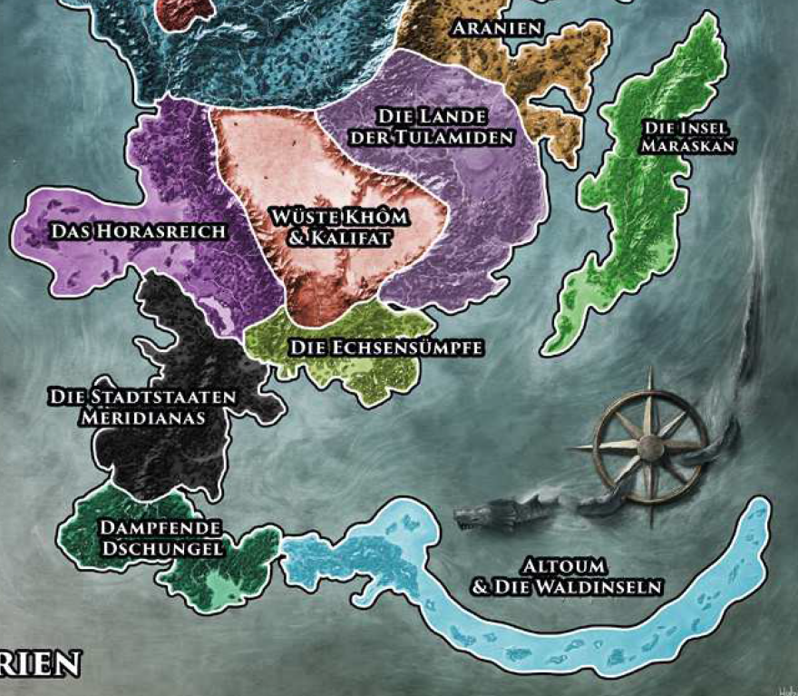

Vor der Eroberung durch die Borbaradianer hatten die streitbaren Maraskaner sich bereits mit der bisherigen Besatzungsmacht, dem Mittelreich, einen jahrzehntelangen Partisanenkrieg geliefert.
Heute bildet das Shikanydad und Sinoda im Süden und in Teilen der Ostküste Maraskans den freien Teil der Insel. Den Rest teilen sich die Herrscher der Fürstkomturei, grausame Kriegsherren, die den blutsaufenden Erzdämonin Charyptoroth, dem Schrecken der blutigen See. Im Verborgenen regt sich zudem eine unfassbar alte Macht aus grauer Vorzeit, deren Monstrositäten das Herz der Insel heimsuchen. Schon vor der borbaradianischen Eroberung war die Insel berüchtigt für ihre dichten Dschungel voller giftiger Tiere und Pflanzen. Auch heutzutage ist ein Marsch durch das "Herz der Finsternis" ein gewagtes Unterfangen, das nur wenige überleben.